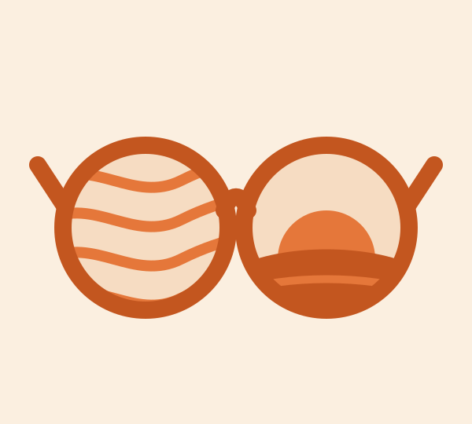
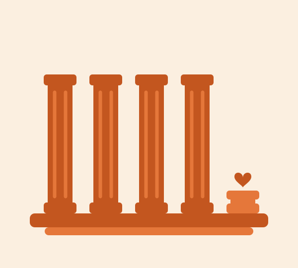
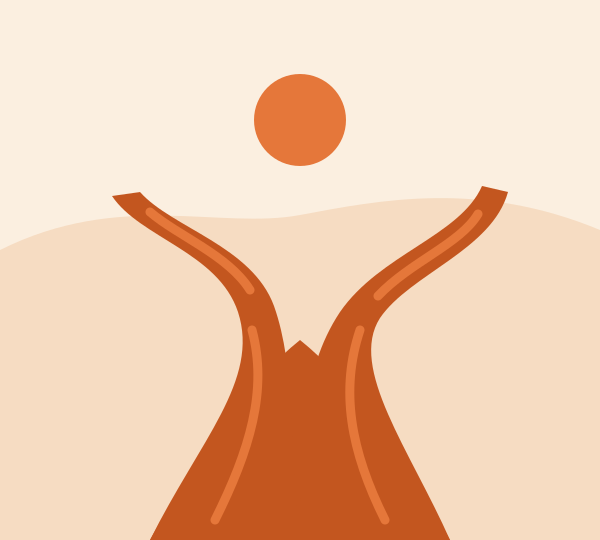
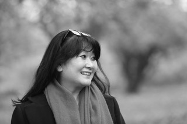
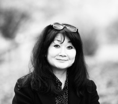
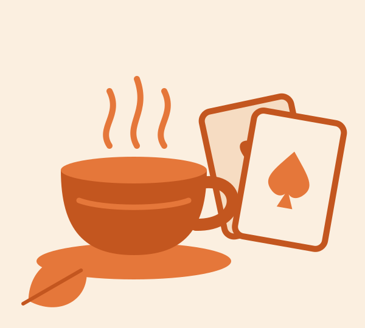

Soony Neudeck Coaching und Training
Was siehst du, wenn du die Perspektive veränderst?
Coaching für Frauen und junge Erwachsene in Basel und Umgebung sowie online.

Soony Neudeck Coaching und Training
Coaching für Frauen und junge Erwachsene in Basel und Umgebung sowie online.

Multispektive
Wir können gleichzeitig stark und unsicher sein. Erfolgreich und erschöpft. Dankbar für unser Leben und trotzdem mit etwas darin unzufrieden.
Das ist kein Widerspruch, sondern einfach nur menschlich. Deswegen braucht es manchmal einen Perspektivwechsel, um wieder zu sehen, was vorher nicht sichtbar war. Und genau deshalb heißt meine Arbeit Multispektive. Nicht als Methode, sondern als Haltung.
Wir alle sehen uns selbst durch viele Brillen: durch die unserer Herkunft und die unserer Erfahrungen, die der Erwartungen anderer und manchmal die unserer Ängste.
Manche dieser Brillen tragen wir so lange, dass wir vergessen, dass wir sie überhaupt aufhaben und verlieren dabei den Blick auf uns selbst.
Genau da wird es für mich spannend: Was siehst du, wenn du die Perspektive wechselst?
MULTISPEKTIVE bedeutet für mich, einen Menschen nicht auf eine Rolle, Eigenschaft, eine Erfahrung oder eine Version seiner Geschichte zu reduzieren.
Im Coaching schauen wir gemeinsam aus unterschiedlichen Perspektiven auf das, was dich gerade beschäftigt. Nicht, um möglichst schnell die „richtige“ Antwort zu finden, sondern um herauszufinden, welche Antwort für dich stimmt.
Zwischen Erwartungen, Verantwortung und Selbstzweifeln verlieren viele Menschen irgendwann den Kontakt zu sich selbst.
Vielleicht bist du gerade an einem Punkt, an dem nach außen eigentlich alles läuft und es sich im Inneren trotzdem nicht mehr richtig anfühlt.
Oder vielleicht stehst du vor einer Entscheidung, weil sich gerade etwas in deinem Leben verändert.
Oder du merkst einfach: So wie bisher möchte ich nicht weitermachen.
Manchmal beginnt Veränderung nicht mit einer Antwort, sondern mit der richtigen Frage aus einer neuen Perspektive. Und genau dann beginnt Entwicklung.
Ich begleite Menschen in Zeiten von Veränderung, Orientierung und Neubeginn. Damit sie mit Klarheit, Selbstvertrauen und Sinn ihren eigenen Weg zu neuen Perspektiven finden. Für ein Leben, das nicht nur funktioniert, sondern inspiriert.

Coaching
Wenn du spürst, dass du dich selbst zwischen Familie, Verantwortung, Erwartungen und Alltag verloren hast.
Familie und Partnerschaft, Beruf und Weiterbildung, Freunde und Soziales, Gesundheit und Sport sind vielleicht insgesamt stabil. Die fünfte Säule – dein EGO – ist verschwindend gering. Vielleicht kümmerst du dich um alles, nur nicht mehr um dich selbst.
Dein Leben ist voll von Verantwortung und Erwartungen und da wird dieser Gedanke laut in dir: Wo bin eigentlich ich bei all dem geblieben?
Der erste Schritt muss nicht perfekt sein. Manchmal reicht erst einmal ein Gespräch.
In einem unverbindlichen Kennenlernen schauen wir gemeinsam, was dich gerade beschäftigt, was du dir wünschst und ob wir beide das Gefühl haben, dass eine Zusammenarbeit passt.
Veränderung beginnt nicht mit perfekten Antworten, sondern mit dem Mut, sich selbst wieder ernst zu nehmen.

Coaching
Manchmal sieht es so aus, als hätten alle anderen längst einen Plan und wüssten genau, wie es weitergeht mit Studium oder Ausbildung und den nächsten Schritten.
Und du? Vielleicht weißt du ziemlich genau, was du nicht willst, aber noch nicht, was stattdessen kommen soll?
Oder du stehst vor einer wichtigen Entscheidung und vergleichst dich ständig mit anderen? Und du fragst dich, ob der Weg, den du eingeschlagen hast, überhaupt deiner ist?
Vielleicht kennst du aber auch eher diese Frage:
Wer bin ich eigentlich, wenn ich einmal nicht darauf höre, was andere von mir erwarten?
Es geht nicht darum, möglichst schnell einen perfekten Lebensplan zu entwickeln. Sondern darum, dass du dich selbst besser kennenlernst, damit du Entscheidungen bewusster treffen kannst. Und es geht auch darum, neue Orientierung zu finden und herauszufinden, wer du bist und wohin dein Weg führen darf.

Meine Arbeitsweise
Sondern daran, ihnen einen Raum zu geben, in dem sie sich selbst wieder hören, sehen und spüren können.
Menschen sind für mich keine Projekte, die repariert werden müssen. Mich interessiert vielmehr: Was ist schon da? Was ist irgendwann leiser geworden? Welche Erwartungen gehören tatsächlich zu dir und welche vielleicht gar nicht?
Jeder Mensch bringt seine eigene Geschichte, Persönlichkeit und Lebenserfahrung mit. Deshalb gibt es bei mir keine Coaching-Schablone.
Je nachdem, was dich beschäftigt, arbeiten wir mit Gesprächen, Perspektivwechseln, systemischen und lösungsorientierten Methoden, Persönlichkeitsmodellen, Wertearbeit oder kreativen und körperorientierten Elementen.
Nicht die Methode steht im Mittelpunkt. Sondern die Frage: Was hilft dir gerade wirklich weiter?
Meine Arbeit ist geprägt von Wertschätzung und Augenhöhe, genauso wie von Klarheit und Ehrlichkeit. Dabei interessiert mich nicht nur, WAS jemand tut. Mich interessiert das WHY, das WARUM und WOZU. Was treibt einen Menschen an? Was hält ihn zurück? Welche Werte sind ihm wirklich wichtig? Welche Erwartungen erfüllt er vielleicht schon so lange, dass er gar nicht mehr merkt, dass es die Erwartungen anderer sind?
Und was würde passieren, wenn er sich selbst einmal aus einer ganz anderen Perspektive betrachten würde?
Diese Neugier begleitet mich seit vielen Jahren. Sie hat mich zur Erwachsenenbildung, zur Psychologie, zur Persönlichkeitsentwicklung und schließlich zum Coaching geführt. Diese Neugier ist auch nach mehr als 20 Jahren Arbeit mit Menschen nicht verschwunden und diese Arbeit erfüllt mich immer noch zutiefst.

Meine Arbeit basiert nicht nur auf Lebenserfahrung und Intuition. Ich habe Erwachsenenbildung und berufliche Fortbildung mit den Schwerpunkten Psychologie und Gruppenpädagogik studiert und mich über viele Jahre in Coaching, Beratung, Persönlichkeitsentwicklung, Kommunikation und Konfliktarbeit weitergebildet.
Unter anderem:
Diese Vielfalt ist für mich heute ein großer Schatz. Denn Menschen kommen selten mit einem Problem, das sauber in eine Schublade passt.
Du musst vor einem ersten Gespräch noch nicht genau wissen, welches Coachingziel du hast. Vielleicht weißt du momentan nur: Irgendetwas soll sich verändern.
Das reicht für den Anfang. Denn aus eigener Erfahrung weiß ich: Man muss nicht immer schon wissen, wo man ankommen möchte, um den nächsten Schritt gehen zu können.
In einem unverbindlichen Kennenlerngespräch schauen wir gemeinsam, was dich beschäftigt und ob ich die richtige Begleitung für dich sein könnte.

Meine Haltung
Ich bin Coachin, Trainerin, Mutter, Pädagogin, vor allem aber bin ich ein Mensch, der selbst nicht immer genau wusste, wohin der eigene Weg führen würde. Die Frage „Wer bin ich eigentlich?“ begleitet mich schon seitdem ich denken kann.
Meine Geschichte hat mich gelehrt, Menschen aus unterschiedlichen Perspektiven zu betrachten. Als asiatisch gelesene Frau und Mutter kenne ich Fragen nach Zugehörigkeit, Erwartungen, Rollen und dem eigenen Platz im Leben nicht nur aus meiner beruflichen Arbeit. Ich kenne sie auch aus meinem eigenen Leben: Ich wurde in Südkorea geboren, als Kind adoptiert und bin in Deutschland aufgewachsen.
Ich kenne das Gefühl, dazuzugehören und gleichzeitig irgendwie auch nicht. Ich habe erlebt, wie es ist, bestimmte Zuschreibungen von außen zu bekommen und die Frage, wie viel davon eigentlich mit dem Menschen zu tun hat, der man selbst ist.
Vielleicht ist genau daraus meine Neugier auf Menschen entstanden. Und mein Wunsch, nicht vorschnell zu glauben, ich hätte jemanden schon verstanden.
Seit über 20 Jahren begleite ich Menschen in Veränderungs- und Entwicklungsprozessen als Coachin, Trainerin und Beraterin. Und noch immer finde ich es faszinierend, was passieren kann, wenn ein Mensch beginnt, sich selbst aus einer anderen Perspektive zu betrachten.

Und sonst?
Ausser Coachin bin ich auch Mutter von zwei inzwischen ziemlich großen und vor allem grossartigen Kindern und habe dabei gelernt, dass Loslassen manchmal mindestens genauso anspruchsvoll ist wie Festhalten.
Familie ist für mich das Wichtigste. Und gleichzeitig liebe ich meine Arbeit. Lange dachte ich, zwischen diesen beiden Dingen müsse man sich irgendwie entscheiden oder zumindest versuchen, allem gleichzeitig gerecht zu werden. Inzwischen kann ich das etwas anders sehen.
Wenn ich gerade nicht coache oder ein Seminar vorbereite, findet man mich auch zwischendurch beim Putzen, oft mit einem Podcast auf den Ohren. Ja, ich putze tatsächlich auch mal gerne. Ordnung halten dagegen? Ganz anderes Thema.
Vielleicht gebe ich auch deshalb so gerne Workshops über Selbstmanagement. Nicht, weil ich darin alles perfekt beherrsche, sondern weil ich selbst jedes Mal wieder etwas mitnehme. Ich finde sowieso, dass man nicht erst perfekt in etwas sein muss, um sich intensiv damit beschäftigen zu dürfen.
In unserer Familie treffen inzwischen ziemlich unterschiedliche Ernährungsbedürfnisse auf eine vegetarische Zweidrittelmehrheit. Das macht die Frage „Was essen wir heute?“ gelegentlich zu einer kleinen Denksportaufgabe. Das Schöne dabei: Das hat bei mir die Lust geweckt, immer wieder neue Rezepte auszuprobieren.
Ich liebe Mode und habe irgendwann sogar eine Ausbildung zur Farb-, Stil- und Imageberaterin gemacht. Heute interessiert mich daran weniger die Frage, welche Farbe wem „steht“. Viel spannender finde ich: Wie sehen wir uns selbst und wie möchten wir gesehen werden? Selbstbild, Fremdbild, Wirkung und Identität begegnen mir deshalb nicht nur im Kleiderschrank, sondern auch in meiner Arbeit.
Und seit einiger Zeit spiele ich mit großer Begeisterung Poker. Leider steht meine Begeisterung dabei in keinem erkennbaren Verhältnis zu meinem Talent.
Kurz gesagt: Ich mag Menschen, Perspektivwechsel, gutes Essen, schöne Dinge, inspirierende Gedanken und offenbar Beschäftigungen, bei denen es noch Entwicklungspotenzial gibt!
Kontakt
Bist du bereit, den ersten Schritt zu gehen? Dann komm gerne unverbindlich auf mich zu! Ein unverbindliches Kennenlerngespräch ist der beste Weg, um herauszufinden, ob wir zusammenpassen. Dabei kannst du mir erzählen, wo du gerade stehst, und ich gebe dir erste Impulse, wie es weitergehen kann.
Ich biete persönliche Begleitung für deine Ziele, Herausforderungen und Veränderungen zu neuen Perspektiven.
E-Mail: info(at)multispektive.ch